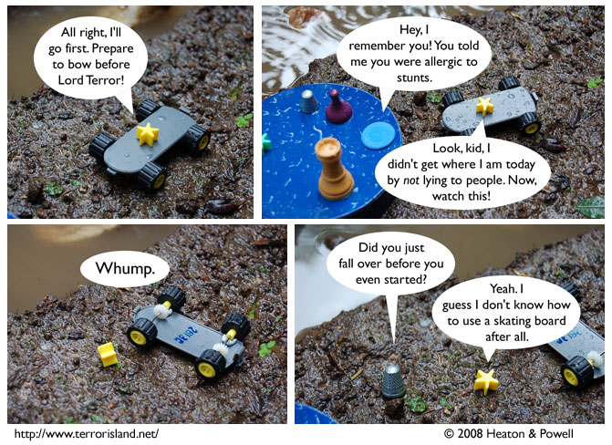

Strip #253
— Wednesday, January 23, 2008
More like one lord *not* leaping, am I right?
Notes, Thoughts, &c.
Ben’s Notes
I made Lord Terror’s skating board out of the part of a remote control that you remove to get at the batteries.
Lewis’s Notes
I think you should bear in mind that although Lord Terror may not know how to ride a skating board, he does know how to lie to people. And in the end, isn’t that the real power?
I wrote Lewis’s comments today. -Ben